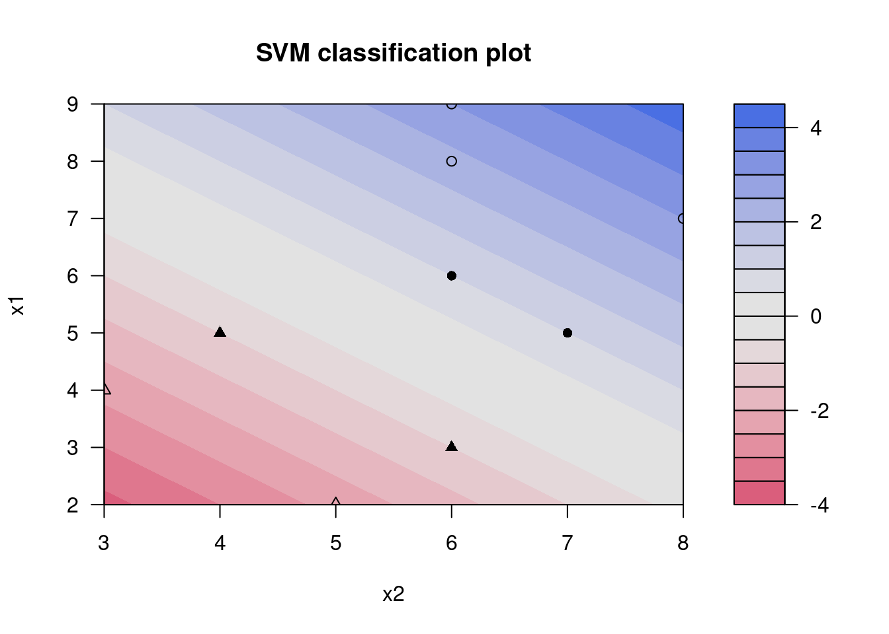
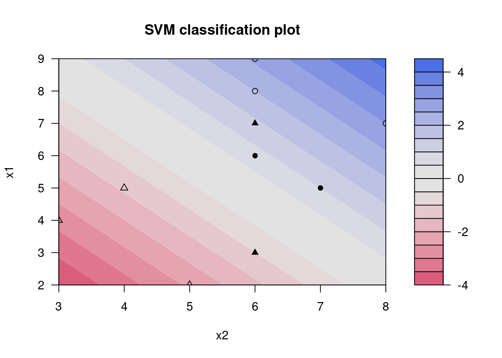

library(kernlab)9장 서포트 벡터 머신
(예 9.1)
패키지 로드
데이터 로드
dat <- read.csv("data/ch9_dat1.csv")
dat$class <- factor(dat$class)
dat x1 x2 class
1 5 7 1
2 4 3 -1
3 7 8 1
4 8 6 1
5 3 6 -1
6 2 5 -1
7 6 6 1
8 9 6 1
9 5 4 -1SVM 학습
model <- ksvm(
class ~ x1 + x2,
data = dat,
scaled = FALSE,
kernel = "vanilladot"
) Setting default kernel parameters 서포트 벡터 객체
model@alphaindex[[1]][1] 1 5 7 9최적해: \(\alpha\)값 (서포트 벡터)
model@alpha[[1]][1] 0.1555556 0.1888889 0.2888889 0.2555556목적함수값
-model@obj[1] 0.4444444하이퍼플레인 추정
계수 (w)
w <- model@coef[[1]] %*% model@xmatrix[[1]]
w x1 x2
[1,] 0.6666667 0.6666667절편 (b)
-model@b[1] -7시각화
plot(model, data = dat)
(예 9.2)
패키지 로드
library(kernlab)데이터 로드
dat <- read.csv("data/ch9_dat2.csv")
dat$class <- factor(dat$class)
dat x1 x2 class
1 5 7 1
2 4 3 -1
3 7 8 1
4 8 6 1
5 3 6 -1
6 2 5 -1
7 6 6 1
8 9 6 1
9 5 4 -1
10 7 6 -1SVM 학습
model <- ksvm(
class ~ x1 + x2,
data = dat,
scaled = FALSE,
kernel = "vanilladot",
C = 1
) Setting default kernel parameters 서포트 벡터 객체
model@alphaindex[[1]][1] 1 5 7 10최적해: \(\alpha\)값 (서포트 벡터)
model@alpha[[1]][1] 0.8 0.8 1.0 1.0목적함수값
-model@obj[1] 3.1하이퍼플레인 추정
계수 (w)
w <- model@coef[[1]] %*% model@xmatrix[[1]]
w x1 x2
[1,] 0.6 0.8절편 (b)
-model@b[1] -7.6오분류 객체
which(model@ymatrix != as.integer(model@fitted))[1] 10시각화
plot(model, data = dat)
패널티 단가(C) 변경: 1, 5, 100
# Try with C = 1, C = 5 and C = 100
Cs <- c(1, 5, 100)
models <- vector("list", length = length(Cs))
for (i in seq_along(Cs)) {
message(paste0("-------\nC = ", Cs[i], "\n-------"))
# SVM with 2nd order polynomial kernel
models[[i]] <- ksvm(
class ~ x1 + x2,
data = dat,
scaled = FALSE,
kernel = "vanilladot",
C = Cs[i]
)
# support vectors
message("Support vectors:")
print(models[[i]]@alphaindex[[1]])
# alpha values for support vectors
message("Alpha values for support vectors:")
print(round(models[[i]]@alpha[[1]], 4))
# objective value
# note that we placed minus(-) sign
message("Objective value:")
print(-models[[i]]@obj)
# hyperplane coefficient vector w and intercept b
message("Hyperplane coefficients (w):")
w <- models[[i]]@coef[[1]] %*% models[[i]]@xmatrix[[1]]
print(w)
# hyperplane's intercept b
# Note that we placed minus(-) sign
message("Hyperplane intercept (b):")
print(-models[[i]]@b)
# misclassified objects
message("Misclassified instances:")
print(which(models[[i]]@ymatrix != as.integer(models[[i]]@fitted)))
}-------
C = 1
------- Setting default kernel parameters Support vectors:[1] 1 5 7 10Alpha values for support vectors:[1] 0.8 0.8 1.0 1.0Objective value:[1] 3.1Hyperplane coefficients (w): x1 x2
[1,] 0.6 0.8Hyperplane intercept (b):[1] -7.6Misclassified instances:[1] 10-------
C = 5
------- Setting default kernel parameters Support vectors:[1] 1 4 5 7 10Alpha values for support vectors:[1] 1.1991 0.6004 1.7995 5.0000 5.0000Objective value:[1] 12.8Hyperplane coefficients (w): x1 x2
[1,] 0.4 1.199115Hyperplane intercept (b):[1] -9.394396Misclassified instances:[1] 10-------
C = 100
------- Setting default kernel parameters Support vectors:[1] 1 4 5 7 10Alpha values for support vectors:[1] 1.2004 19.5999 20.8003 100.0000 100.0000Objective value:[1] 240.8Hyperplane coefficients (w): x1 x2
[1,] 0.4001396 1.200419Hyperplane intercept (b):[1] -9.403397Misclassified instances:[1] 10(예 9.3)
패키지 로드
library(kernlab)데이터 로드
dat <- matrix(c(1, 2, 2, 2, 2, -1), nrow = 3, byrow = TRUE)
dat [,1] [,2]
[1,] 1 2
[2,] 2 2
[3,] 2 -1가우시안 커널
kernelMatrix(rbfdot(sigma = 1 / 2), dat)An object of class "kernelMatrix"
[,1] [,2] [,3]
[1,] 1.000000000 0.6065307 0.006737947
[2,] 0.606530660 1.0000000 0.011108997
[3,] 0.006737947 0.0111090 1.000000000이차 커널
kernelMatrix(polydot(degree = 2), dat)An object of class "kernelMatrix"
[,1] [,2] [,3]
[1,] 36 49 1
[2,] 49 81 9
[3,] 1 9 36시그모이드 커널 (하이퍼볼릭 탄젠트 커널)
kernelMatrix(tanhdot(offset = 0), dat)An object of class "kernelMatrix"
[,1] [,2] [,3]
[1,] 0.9999092 0.9999877 0.0000000
[2,] 0.9999877 0.9999998 0.9640276
[3,] 0.0000000 0.9640276 0.9999092선형 커널
kernelMatrix(vanilladot(), dat)An object of class "kernelMatrix"
[,1] [,2] [,3]
[1,] 5 6 0
[2,] 6 8 2
[3,] 0 2 5(예 9.6)
패키지 로드
library(kernlab)데이터 로드
dat <- data.frame(
x1 = c(-1, -1, 1, 1),
x2 = c(-1, 1, -1, 1),
class = factor(c(-1, 1, 1, -1))
)
dat x1 x2 class
1 -1 -1 -1
2 -1 1 1
3 1 -1 1
4 1 1 -1이차 커널
X <- as.matrix(dat[, 1:2])
K <- kernelMatrix(polydot(degree = 2), X)
KAn object of class "kernelMatrix"
[,1] [,2] [,3] [,4]
[1,] 9 1 1 1
[2,] 1 9 1 1
[3,] 1 1 9 1
[4,] 1 1 1 9SVM 학습
model <- ksvm(
class ~ x1 + x2,
data = dat,
scaled = FALSE,
kernel = polydot(degree = 2)
)서포트 벡터 객체
model@alphaindex[[1]][1] 1 2 3 4최적해: \(\alpha\)값 (서포트 벡터)
model@alpha[[1]][1] 0.125 0.125 0.125 0.125하이퍼플레인 추정
계수 (beta)
beta1 <- 2 * sum(model@coef[[1]] * model@xmatrix[[1]][, "x1"])
beta2 <- 2 * sum(model@coef[[1]] * model@xmatrix[[1]][, "x2"])
beta11 <- sum(model@coef[[1]] * model@xmatrix[[1]][, "x1"]^2)
beta22 <- sum(model@coef[[1]] * model@xmatrix[[1]][, "x2"]^2)
beta12 <- 2 * sum(model@coef[[1]] * apply(model@xmatrix[[1]], 1, prod))
betas <- c(beta1, beta2, beta11, beta22, beta12)
names(betas) <- c("beta1", "beta2", "beta11", "beta22", "beta12")
round(betas, 4) beta1 beta2 beta11 beta22 beta12
0 0 0 0 -1 절편 (b)
-model@b[1] 0(예 9.7)
패키지 로드
library(kernlab)데이터 로드
dat <- read.csv("data/ch9_dat3.csv")
dat$class <- factor(dat$class)
dat x1 x2 class
1 5 7 1
2 4 3 -1
3 7 8 -1
4 8 6 -1
5 3 6 1
6 2 5 1
7 6 6 1
8 9 6 -1
9 5 4 -1SVM 학습
model <- ksvm(
class ~ x1 + x2,
data = dat,
scaled = FALSE,
kernel = polydot(degree = 2),
C = 1
)서포트 벡터 객체
model@alphaindex[[1]][1] 1 2 3 7 9최적해: \(\alpha\)값 (서포트 벡터)
model@alpha[[1]][1] 0.23555183 0.50094882 0.65316473 1.00000000 0.08143829하이퍼플레인 추정
beta1 <- 2 * sum(model@coef[[1]] * model@xmatrix[[1]][, "x1"])
beta2 <- 2 * sum(model@coef[[1]] * model@xmatrix[[1]][, "x2"])
beta11 <- sum(model@coef[[1]] * model@xmatrix[[1]][, "x1"]^2)
beta22 <- sum(model@coef[[1]] * model@xmatrix[[1]][, "x2"]^2)
beta12 <- 2 * sum(model@coef[[1]] * apply(model@xmatrix[[1]], 1, prod))
hyperplane <- c(-model@b, beta1, beta2, beta11, beta22, beta12)
names(hyperplane) <- c("b", "beta1", "beta2", "beta11", "beta22", "beta12")
round(hyperplane, 4) b beta1 beta2 beta11 beta22 beta12
-3.4455 0.3892 1.1899 -0.1674 -0.0721 0.0539 오분류 객체
which(model@ymatrix != as.integer(model@fitted))[1] 7패널티 단가(C) 변경: 1, 5, 100
# Try with C = 1, C = 5 and C = 100
Cs <- c(1, 5, 100)
models <- vector("list", length = length(Cs))
for (i in seq_along(Cs)) {
message(paste0("-------\nC = ", Cs[i], "\n-------"))
# SVM with 2nd order polynomial kernel
models[[i]] <- ksvm(
class ~ x1 + x2,
data = dat,
scaled = FALSE,
kernel = polydot(degree = 2),
C = Cs[i]
)
# support vectors
message("Support vectors:")
print(models[[i]]@alphaindex[[1]])
# alpha values for support vectors
message("Alpha values for support vectors:")
print(round(models[[i]]@alpha[[1]], 4))
# hyperplane
beta1 <- 2 * sum(models[[i]]@coef[[1]] * models[[i]]@xmatrix[[1]][, "x1"])
beta2 <- 2 * sum(models[[i]]@coef[[1]] * models[[i]]@xmatrix[[1]][, "x2"])
beta11 <- sum(models[[i]]@coef[[1]] * models[[i]]@xmatrix[[1]][, "x1"]^2)
beta22 <- sum(models[[i]]@coef[[1]] * models[[i]]@xmatrix[[1]][, "x2"]^2)
beta12 <- 2 * sum(models[[i]]@coef[[1]] * apply(models[[i]]@xmatrix[[1]], 1, prod))
hyperplane <- c(-models[[i]]@b, beta1, beta2, beta11, beta22, beta12)
names(hyperplane) <- c("b", "beta1", "beta2", "beta11", "beta22", "beta12")
message("Hyperplane coefficients:")
print(round(hyperplane, 4))
# misclassified objects
message("Misclassified instances:")
print(which(models[[i]]@ymatrix != as.integer(models[[i]]@fitted)))
}-------
C = 1
-------Support vectors:[1] 1 2 3 7 9Alpha values for support vectors:[1] 0.2356 0.5009 0.6532 1.0000 0.0814Hyperplane coefficients: b beta1 beta2 beta11 beta22 beta12
-3.4455 0.3892 1.1899 -0.1674 -0.0721 0.0539 Misclassified instances:[1] 7-------
C = 5
-------
Support vectors:[1] 2 3 6 7 9Alpha values for support vectors:[1] 0.0865 2.1573 0.2357 5.0000 2.9919Hyperplane coefficients: b beta1 beta2 beta11 beta22 beta12
-5.2716 0.1297 3.3860 -0.9460 -0.8234 1.3451 Misclassified instances:integer(0)-------
C = 100
-------
Support vectors:[1] 2 3 6 7 9Alpha values for support vectors:[1] 0.0152 2.7412 0.2814 6.3923 3.9173Hyperplane coefficients: b beta1 beta2 beta11 beta22 beta12
-6.2803 0.1622 4.2330 -1.2444 -1.0915 1.8056 Misclassified instances:integer(0)